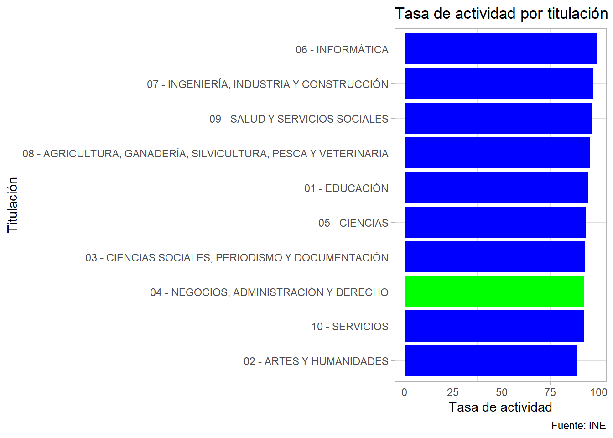
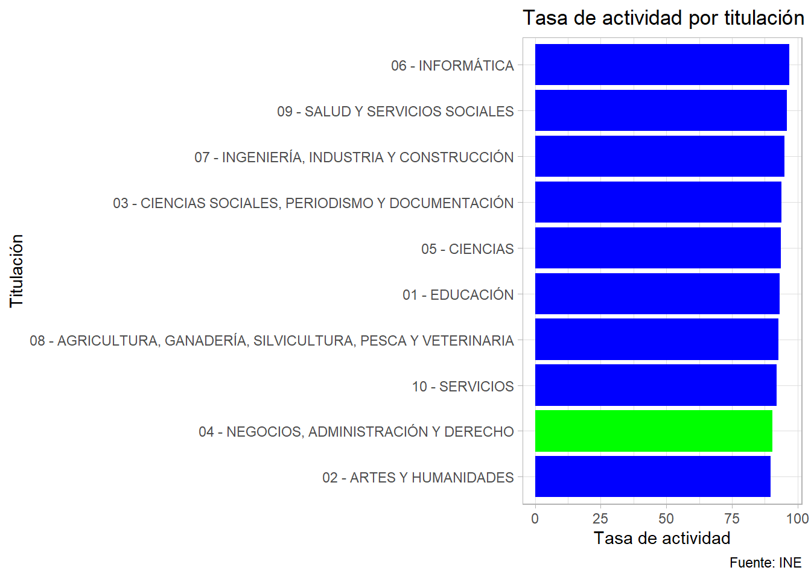
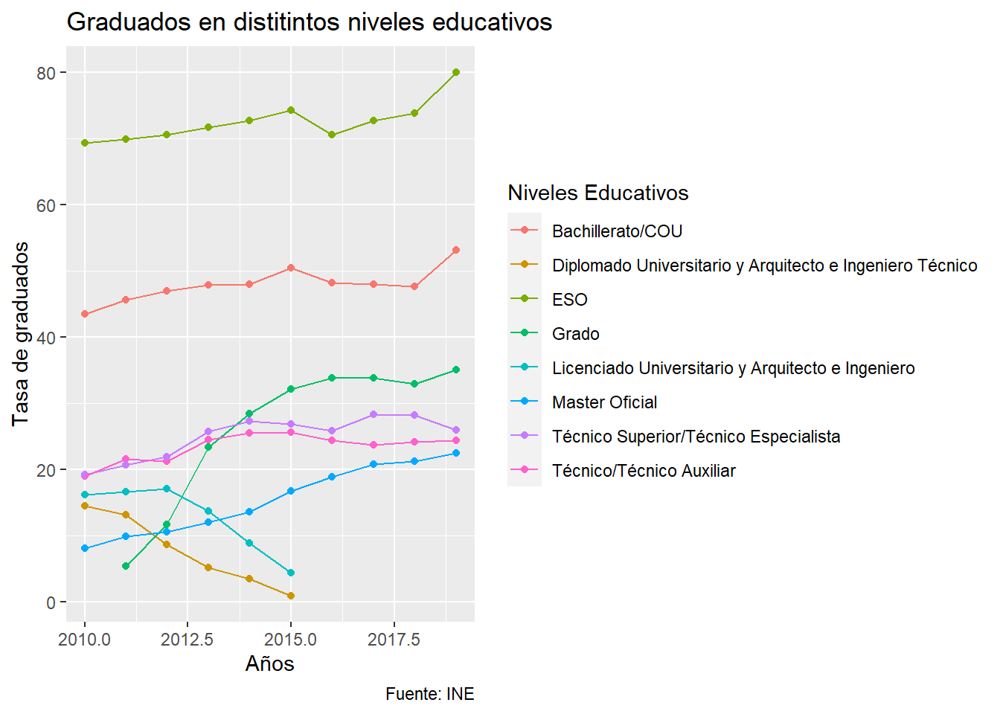

Análisis del paro en el país con distintas variables
trabajo BigData
Autor/a
Miguel Herrero (mihefuerr@alumni.uv.es)
Fecha de publicación
11 de enero de 2023
INTRODUCCIÓN
Mi trabajo trata del análisis de las diferentes tasas de empleo y desempleo en el país a lo largo de los años, según la titulación que se haya obtenido.
Diferentes estudios
Bien es sabido que el empleo y el paro han sido temas que no han ido bien en los últimos años, en especial en nuestro país. Es por eso que voy a analizar mediante gráficos y tablas cómo han sido realmente estos datos, y en que sectores es más preocupante el desempleo.
Aquí dejo un vídeo que explica muy bien a modo de introducción el problema con el paro en el país.
Tasa de actividad por géneros
Las personas pueden llegar a tener más éxito a la hora de encontrar un tipo de empleo, según la carrera que hayan llevado a cabo. Veamos según sus tasas de actividad qué tipos de empleo consiguen un mayor número de trabajo según los distintos tipos de géneros. Destacamos y analizamos la rama de los negocios y administración, ya que es la que nos encontramos estudiando en la carrera.
Tasa de actividad de los hombres

Como podemos ver las titulaciones que mayor tasa de actividad tienen en los hombres son las relacionadas con la informática, las ingenierías y la salud. Mientras que las que menos tasa de actividad tienen son las relacionadas con el arte y las humanidades, y los servicios.
Tasa de actividad de las mujeres

En el caso de las mujeres vemos que las titulaciones que mayor tasa de actividad tienen son las relacionadas con la informática, la salud y las ingenierías. Mientras que las que menos tasa de actividad tienen son las relacionadas con el arte y las humanidades, y los negocios y administración.
Como vemos sí que hay alguna diferencia entra los diferentes géneros, pero esta es muy escasa. En cuanto a la rama destacada, los hombres tienen una mayor tasa de actividad que las mujeres en el mundo de la empresa.
Empleo y paro según los estudios realizados
En este datatable podemos ver las diferentes tasas de empleo y paro según la carrera. En ella podemos ordenar cuáles son las carreras que mayor y menor tasa de empleo tienen, entre las que mayor empleo tienen están algunas como ingeniería electrónica, ingeniería de telecomunicaciones, y desarrollo de software.
Entre las que menos empleo tienen destacamos algunas como conservación y restauración, filosofía, e historia del arte.
Graduados según los niveles educativos
Ahora, teniendo esta información de cuáles son las carreras que mayor empleo tiene cualquiera diría de meterse a estas, pero vamos a ver cómo ha ido evolucionando las tasas de graduados según las carreras realizadas, y como estas tasas han ido evolucionando a lo largo de los últimos años.

Como vemos, los títulos que menor tasa de graduados obstentan (seguramente debido a la dificultad) son los de arquitectura e ingeniería, y los graduados de máster, aunque estos últimos han crecido en gran medido en los últimos años. Destaca también que la tasa de graduados en la ESO y bachillerato también está aumentando en los últimos años.
Con esto concluimos que cada vez la gente está estudiando más, ya que saben que si quieren tener un buen trabajo y no acabar en el paro, es fundamental entrar y tener unos buenos estudios.
Ejecutar el código
---title: "Análisis del paro en España"description: | Análisis del paro en el país con distintas variablesauthor:- name: Miguel Herrero (mihefuerr@alumni.uv.es)date: 2023-01-11 categories: [trabajo BigData] image: "imagen.jpg"title-block-banner: true - #{true, false, "green","#AA0000"}title-block-banner-color: "#90241C" #-"#FFFFFF" toc: truetoc-location: lefttoc-depth: 3smooth-scroll: trueformat: html: mainfont: serif backgroundcolor: "#C2E6FE" #embed-resources: true link-external-newwindow: true #css: ./assets/my_css_file.css #- CUIDADO!!!!code-tools: truecode-link: true---## INTRODUCCIÓNMi trabajo trata del análisis de las diferentes tasas de empleo y desempleo en el país a lo largo de los años, según la titulación que se haya obtenido.:format(jpg)/f.elconfidencial.com%2Foriginal%2Fe89%2Fe0c%2Fbad%2Fe89e0cbad786071490195b314426f16e.jpg)Bien es sabido que el empleo y el paro han sido temas que no han ido bien en los últimos años, en especial en nuestro país. Es por eso que voy a analizar mediante gráficos y tablas cómo han sido realmente estos datos, y en que sectores es más preocupante el desempleo.Aquí dejo un vídeo que explica muy bien a modo de introducción el problema con el paro en el país.```{r, echo = FALSE, out.width = "60%", warning = FALSE}library("vembedr")embed_url("https://www.youtube.com/watch?v=59GUIQL6fqU")```------------------------------------------------------------------------# Tasa de actividad por génerosLas personas pueden llegar a tener más éxito a la hora de encontrar un tipo de empleo, según la carrera que hayan llevado a cabo. Veamos según sus tasas de actividad qué tipos de empleo consiguen un mayor número de trabajo según los distintos tipos de géneros. Destacamos y analizamos la rama de los negocios y administración, ya que es la que nos encontramos estudiando en la carrera.## Tasa de actividad de los hombres```{r, echo=FALSE, message=FALSE, warning=FALSE}library(tidyverse)fs::dir_create("pruebas") #- primero creamos la carpeta "pruebas"my_url <-"https://www.ine.es/jaxi/files/tpx/es/csv_bdsc/48895.csv?nocab=1"curl::curl_download(my_url, "./pruebas/actividad_empleo.csv")actividad_empleo <- rio::import("./pruebas/actividad_empleo.csv")actividad <- actividad_empleo %>%filter(`Tasas de actividad, empleo y paro`=="Tasa de actividad") %>%filter(Sexo =="Hombres") %>%filter(Titulación =="01 - EDUCACIÓN"| Titulación =="02 - ARTES Y HUMANIDADES"| Titulación =="03 - CIENCIAS SOCIALES, PERIODISMO Y DOCUMENTACIÓN"| Titulación =="04 - NEGOCIOS, ADMINISTRACIÓN Y DERECHO"| Titulación =="05 - CIENCIAS"| Titulación =="06 - INFORMÁTICA"| Titulación =="07 - INGENIERÍA, INDUSTRIA Y CONSTRUCCIÓN"| Titulación =="08 - AGRICULTURA, GANADERÍA, SILVICULTURA, PESCA Y VETERINARIA"| Titulación =="09 - SALUD Y SERVICIOS SOCIALES"| Titulación =="10 - SERVICIOS")#limpiamos los datos dd <- janitor::clean_names(actividad)actividad_limpio <- dd %>%mutate(total = stringr::str_replace(total, "," , "." ))actividad_limpio <- actividad_limpio %>%mutate(total =as.numeric(total))df <- actividad_limpio %>%arrange(total)grafica_actividad <-ggplot(df, aes(x = titulacion, y = total)) +geom_bar(stat ="identity" , fill ="blue") +theme_light() +coord_flip() +scale_x_discrete(limits = df$titulacion) +labs(title ="Tasa de actividad por titulación (Hombres)", caption ="Fuente: INE",x ="Titulación",y ="Tasa de actividad")# Resaltamos la titulación de Negociosnegocios <- df %>%filter(titulacion %in%c("04 - NEGOCIOS, ADMINISTRACIÓN Y DERECHO"))grafica_negocios <- grafica_actividad +geom_bar(data = negocios, aes(x = titulacion, y = total), stat ="identity", fill ="green") +labs(title ="Tasa de actividad por titulación (Hombres)", caption ="Fuente: INE",x ="Titulación",y ="Tasa de actividad")grafica_negocios```Como podemos ver las titulaciones que mayor tasa de actividad tienen en los hombres son las relacionadas con la informática, las ingenierías y la salud. Mientras que las que menos tasa de actividad tienen son las relacionadas con el arte y las humanidades, y los servicios.## Tasa de actividad de las mujeres```{r, echo=FALSE, message=FALSE, warning=FALSE}library(tidyverse)fs::dir_create("pruebas") #- primero creamos la carpeta "pruebas"my_url <-"https://www.ine.es/jaxi/files/tpx/es/csv_bdsc/48895.csv?nocab=1"curl::curl_download(my_url, "./pruebas/actividad_empleo.csv")actividad_empleo <- rio::import("./pruebas/actividad_empleo.csv")actividad <- actividad_empleo %>%filter(`Tasas de actividad, empleo y paro`=="Tasa de actividad") %>%filter(Sexo =="Mujeres") %>%filter(Titulación =="01 - EDUCACIÓN"| Titulación =="02 - ARTES Y HUMANIDADES"| Titulación =="03 - CIENCIAS SOCIALES, PERIODISMO Y DOCUMENTACIÓN"| Titulación =="04 - NEGOCIOS, ADMINISTRACIÓN Y DERECHO"| Titulación =="05 - CIENCIAS"| Titulación =="06 - INFORMÁTICA"| Titulación =="07 - INGENIERÍA, INDUSTRIA Y CONSTRUCCIÓN"| Titulación =="08 - AGRICULTURA, GANADERÍA, SILVICULTURA, PESCA Y VETERINARIA"| Titulación =="09 - SALUD Y SERVICIOS SOCIALES"| Titulación =="10 - SERVICIOS")#limpiamos los datos dd <- janitor::clean_names(actividad)actividad_limpio <- dd %>%mutate(total = stringr::str_replace(total, "," , "." ))actividad_limpio <- actividad_limpio %>%mutate(total =as.numeric(total))df <- actividad_limpio %>%arrange(total)grafica_actividad <-ggplot(df, aes(x = titulacion, y = total)) +geom_bar(stat ="identity" , fill ="blue") +theme_light() +coord_flip() +scale_x_discrete(limits = df$titulacion) +labs(title ="Tasa de actividad por titulación (Mujeres)", caption ="Fuente: INE",x ="Titulación",y ="Tasa de actividad")# Resaltamos la titulación de Negociosnegocios <- df %>%filter(titulacion %in%c("04 - NEGOCIOS, ADMINISTRACIÓN Y DERECHO"))grafica_negocios <- grafica_actividad +geom_bar(data = negocios, aes(x = titulacion, y = total), stat ="identity", fill ="green") +labs(title ="Tasa de actividad por titulación (Mujeres)", caption ="Fuente: INE",x ="Titulación",y ="Tasa de actividad")grafica_negocios```En el caso de las mujeres vemos que las titulaciones que mayor tasa de actividad tienen son las relacionadas con la informática, la salud y las ingenierías. Mientras que las que menos tasa de actividad tienen son las relacionadas con el arte y las humanidades, y los negocios y administración.Como vemos sí que hay alguna diferencia entra los diferentes géneros, pero esta es muy escasa. En cuanto a la rama destacada, los hombres tienen una mayor tasa de actividad que las mujeres en el mundo de la empresa.------------------------------------------------------------------------# Empleo y paro según los estudios realizadosEn este datatable podemos ver las diferentes tasas de empleo y paro según la carrera. En ella podemos ordenar cuáles son las carreras que mayor y menor tasa de empleo tienen, entre las que mayor empleo tienen están algunas como ingeniería electrónica, ingeniería de telecomunicaciones, y desarrollo de software.Entre las que menos empleo tienen destacamos algunas como conservación y restauración, filosofía, e historia del arte.```{r, echo=FALSE, message=FALSE, warning=FALSE}library(tidyverse)library(sf)library(tmap)fs::dir_create("pruebas") #- primero creamos la carpeta "pruebas"my_url <-"https://www.ine.es/jaxi/files/tpx/es/csv_bdsc/48895.csv?nocab=1"curl::curl_download(my_url, "./pruebas/actividad_empleo.csv")actividad_empleo <- rio::import("./pruebas/actividad_empleo.csv")# Limpiamos y btenemos los datos que queremosempleo_paro <- actividad_empleo %>%filter(`Tasas de actividad, empleo y paro`=="Tasa de empleo"|`Tasas de actividad, empleo y paro`=="Tasa de paro") %>%slice(-c(1:2)) %>%slice(c(1:222)) %>%select(-c("Sexo")) %>%rename("Tasas de empleo y paro"="Tasas de actividad, empleo y paro") empleo_paro <- janitor::clean_names(empleo_paro)# Lo ponemos bonitocolnames(empleo_paro)[1] <-"Titulación"colnames(empleo_paro)[2] <-"Tipo de Tasa"colnames(empleo_paro)[3] <-"Total"# Hacemos el datatable de los datosDT::datatable(empleo_paro, filter ='top', options =list(pageLength =7, autoWidth =TRUE ))```------------------------------------------------------------------------# Graduados según los niveles educativosAhora, teniendo esta información de cuáles son las carreras que mayor empleo tiene cualquiera diría de meterse a estas, pero vamos a ver cómo ha ido evolucionando las tasas de graduados según las carreras realizadas, y como estas tasas han ido evolucionando a lo largo de los últimos años.```{r, echo=FALSE, message=FALSE, warning=FALSE}library(tidyverse)library(ggplot2)library(ggthemes)fs::dir_create("pruebas") #- primero creamos la carpeta "pruebas"my_url <-"https://www.ine.es/jaxiT3/files/t/es/csv_bdsc/12718.csv?nocab=1"curl::curl_download(my_url, "./pruebas/graduados_anos.csv")graduados_anos <- rio::import("./pruebas/graduados_anos.csv")graduados_anos <- graduados_anos %>%filter(Sexo =="Hombres") %>%slice(-c(41:44)) %>%slice(-c(47:50)) %>%slice(-c(62))#limpiamos los datos dd <- janitor::clean_names(graduados_anos)graduados_limpio <- dd %>%mutate(total = stringr::str_replace(total, "," , "." ))graduados_limpio <- graduados_limpio %>%mutate(total =as.numeric(total))ggplot(data = graduados_limpio) +geom_point(aes(x = periodo, y = total, color = niveles_educativos)) +geom_line(aes(x = periodo, y = total, color = niveles_educativos, group = niveles_educativos)) +labs(title ="Graduados en distitintos niveles educativos", caption ="Fuente: INE", x ="Años", y ="Tasa de graduados", color ="Niveles Educativos") +theme(legend.position ="right")```Como vemos, los títulos que menor tasa de graduados obstentan (seguramente debido a la dificultad) son los de arquitectura e ingeniería, y los graduados de máster, aunque estos últimos han crecido en gran medido en los últimos años. Destaca también que la tasa de graduados en la ESO y bachillerato también está aumentando en los últimos años. Con esto concluimos que cada vez la gente está estudiando más, ya que saben que si quieren tener un buen trabajo y no acabar en el paro, es fundamental entrar y tener unos buenos estudios.
:format(jpg)/f.elconfidencial.com%2Foriginal%2Fe89%2Fe0c%2Fbad%2Fe89e0cbad786071490195b314426f16e.jpg)